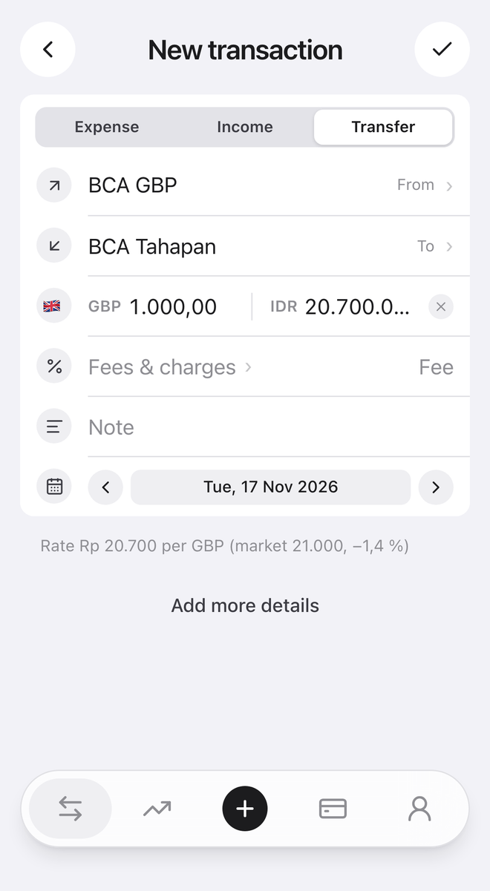

TODAYReal app
Rate · Cost · Exchange loss (recorded as spending)
AFTERBuild 144
Rate only

Invented example: £1.000 from BCA GBP, Rp 20.700.000 into BCA Tahapan. The grey lines sit under the white box, above "Add more details". After: Cost and "Exchange loss … (recorded as spending)" are gone; the Rate line stays, showing BCA's rate against the market. Nothing counts as spending or income; a typed fee in Fees & charges still counts as a fee.
TODAYReal app
Rate · Cost · Exchange loss (recorded as spending)
AFTERBuild 144
Rate only
